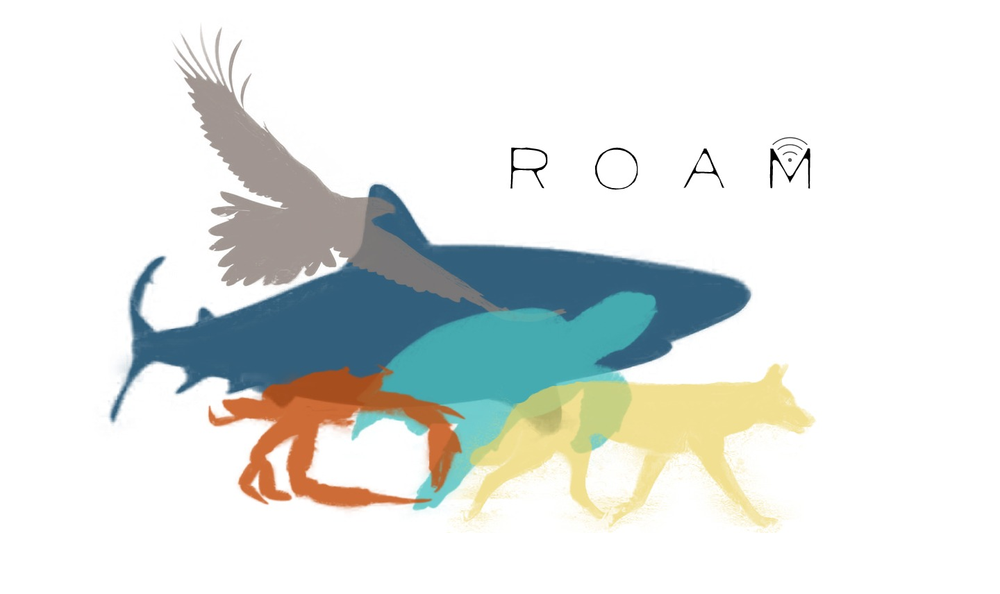

The Research Of Animal Movement group discusses techniques and analysis for data that tracks animals in time and space, and revel in the delights of movement ecology. We seek to increase capacity building in our community to support effective delivery of research and increase research outcomes using the most adequate tools for the job.
Posts
A discussion on A comprehensive analysis of autocorrelation and bias in home range estimation by Noonan et al 2019.
Jul 13, 2021
Learning more about Movement-based Kernel Density Estimate (MKDE) and the Autocorrelated Kernel Density Estimate (AKDE).
Jun 22, 2021
A review on some of the common methods of space use estimation for animal movement.
Jun 8, 2021
A summary of our Movebank MoveVis session.
Mar 16, 2021
A minimal example of using markdown with fastpages.
Jan 14, 2020